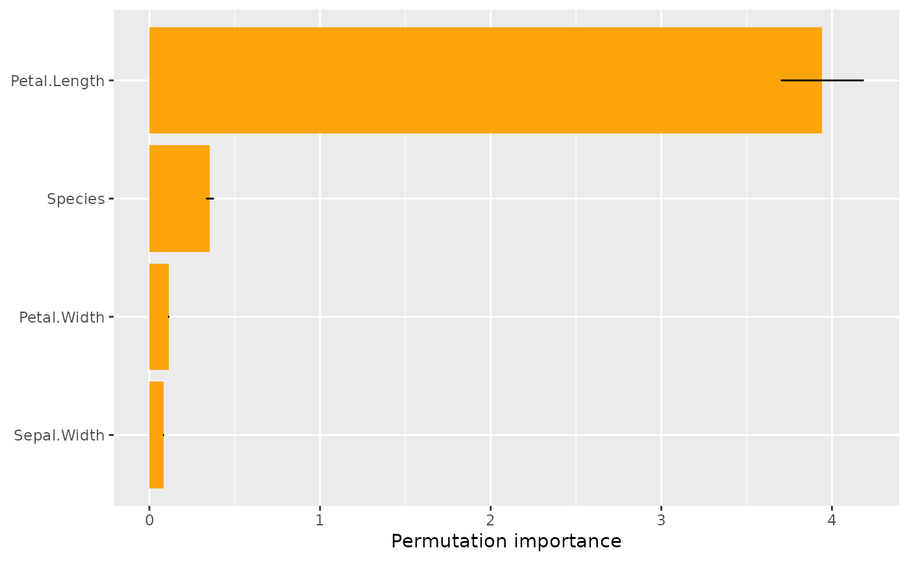
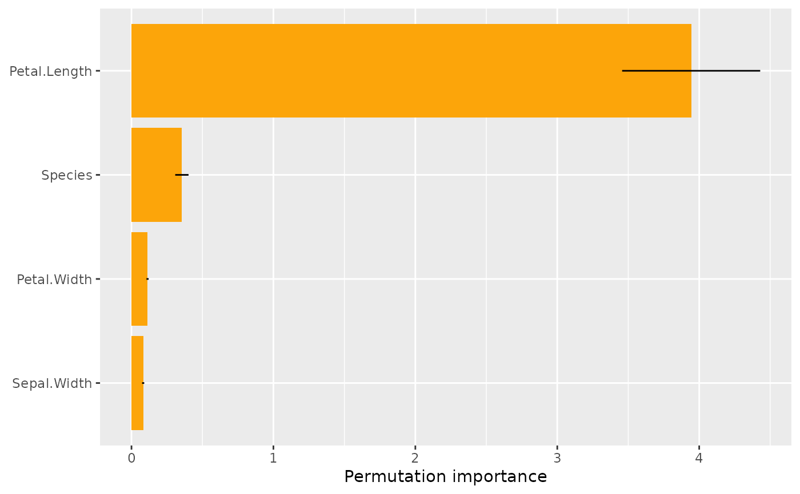
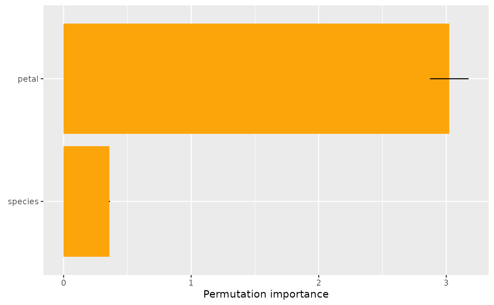
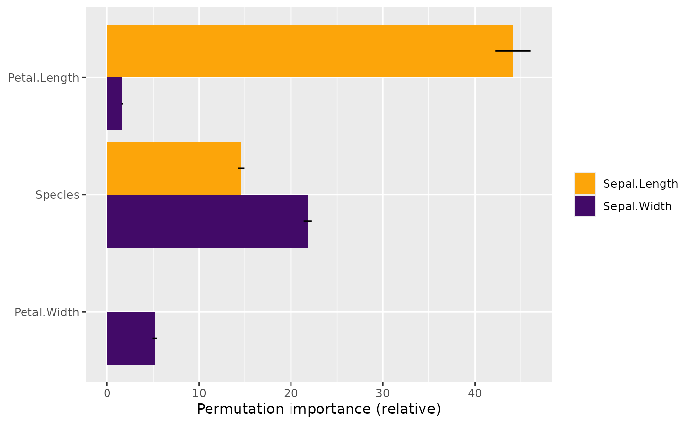

Calculates permutation importance for a set of features or a set of feature groups.
By default, importance is calculated for all columns in X.
perm_importance(object, ...)
# S3 method for default
perm_importance(
object,
X,
y,
v = colnames(X),
pred_fun = stats::predict,
loss = "squared_error",
perms = 4L,
agg_cols = FALSE,
normalize = FALSE,
n_max = 10000L,
w = NULL,
verbose = FALSE,
...
)
# S3 method for ranger
perm_importance(
object,
X,
y,
v = colnames(X),
pred_fun = function(m, X, ...) stats::predict(m, X, ...)$predictions,
loss = "squared_error",
perms = 4L,
agg_cols = FALSE,
normalize = FALSE,
n_max = 10000L,
w = NULL,
verbose = FALSE,
...
)
# S3 method for Learner
perm_importance(
object,
X,
y,
v = colnames(X),
pred_fun = NULL,
loss = "squared_error",
perms = 4L,
agg_cols = FALSE,
normalize = FALSE,
n_max = 10000L,
w = NULL,
verbose = FALSE,
...
)
# S3 method for explainer
perm_importance(
object,
X = object[["data"]],
y = object[["y"]],
v = colnames(X),
pred_fun = object[["predict_function"]],
loss = "squared_error",
perms = 4L,
agg_cols = FALSE,
normalize = FALSE,
n_max = 10000L,
w = object[["weights"]],
verbose = FALSE,
...
)Fitted model object.
Additional arguments passed to pred_fun(object, X, ...),
for instance type = "response" in a glm() model.
A data.frame or matrix serving as background dataset.
Vector/matrix of the response corresponding to X.
Vector of feature names, or named list of feature groups.
Prediction function of the form function(object, X, ...),
providing \(K \ge 1\) predictions per row. Its first argument represents the
model object, its second argument a data structure like X. Additional arguments
(such as type = "response" in a GLM) can be passed via .... The default,
stats::predict(), will work in most cases. Note that column names in a resulting
matrix of predictions will be used as default column names in the results.
One of "squared_error", "logloss", "mlogloss", "poisson",
"gamma", "absolute_error", "classification_error". Alternatively, a loss function
can be provided that turns observed and predicted values into a numeric vector or
matrix of unit losses of the same length as X.
For "mlogloss", the response y can either be a dummy matrix or a discrete vector.
The latter case is handled via model.matrix(~ y + 0).
For "classification_error", both predictions and responses can be non-numeric.
Number of permutations (default 4).
Should multivariate losses be summed up? Default is FALSE.
Should importance statistics be divided by average loss?
Default is FALSE. If TRUE, an importance of 1 means that the average loss
has doubled by shuffling that feature's column.
If X has more than n_max rows, a random sample of n_max rows is
selected from X. In this case, set a random seed for reproducibility.
Optional vector of case weights for each row of X.
Should a progress bar be shown? The default is TRUE.
An object of class "perm_importance" containing these elements:
imp: (p x d) matrix containing the sorted (average) importance values, i.e.,
a row per feature (group) and a column per loss dimension.
SE: (p x d) matrix with corresponding standard errors of imp.
Multiply with sqrt(perms) to get standard deviations.
perf: Average loss before shuffling.
v: Same as input v.
perms: Same as input perms.
The permutation importance of a feature is defined as the increase in the average
loss when shuffling the corresponding feature values before calculating predictions.
By default, the process is repeated perms = 4 times, and the results are averaged.
In most of the cases, importance values should be derived from an independent test
data set.
perm_importance(default): Default method.
perm_importance(ranger): Method for "ranger" models.
perm_importance(Learner): Method for "mlr3" models.
perm_importance(explainer): Method for DALEX "explainer".
The default loss is the "squared_error". Other choices:
"absolute_error": The absolute error is the loss corresponding to median regression.
"poisson": Unit Poisson deviance, i.e., the loss function used in
Poisson regression. Actual values y and predictions must be non-negative.
"gamma": Unit gamma deviance, i.e., the loss function of Gamma regression.
Actual values y and predictions must be positive.
"logloss": The Log Loss is the loss function used in logistic regression,
and the top choice in probabilistic binary classification. Responses y and
predictions must be between 0 and 1. Predictions represent probabilities of
having a "1".
"mlogloss": Multi-Log-Loss is the natural loss function in probabilistic multi-class
situations. If there are K classes and n observations, the predictions form
a (n x K) matrix of probabilities (with row-sums 1).
The observed values y are either passed as (n x K) dummy matrix,
or as discrete vector with corresponding levels.
The latter case is turned into a dummy matrix via model.matrix(~ y + 0).
"classification_error": Misclassification error. This is currently the
only prespecified loss that accepts non-numeric predictions. Both the
observed values y and the predictions can be character/factor. This
loss function can be used in non-probabilistic classification settings.
BUT: Probabilistic classification (with "mlogloss") is preferred.
A function with signature f(actual, predicted), returning a numeric
vector of length n or a matrix with n rows, where n is the number of rows of X.
Fisher A., Rudin C., Dominici F. (2018). All Models are Wrong but many are Useful: Variable Importance for Black-Box, Proprietary, or Misspecified Prediction Models, using Model Class Reliance. Arxiv.
# MODEL 1: Linear regression
fit <- lm(Sepal.Length ~ ., data = iris)
s <- perm_importance(fit, X = iris[-1], y = iris$Sepal.Length)
s
#> Petal.Length Species Petal.Width Sepal.Width
#> 4.16940662 0.38522490 0.12284113 0.09162335
s$imp
#> [,1]
#> Petal.Length 4.16940662
#> Species 0.38522490
#> Petal.Width 0.12284113
#> Sepal.Width 0.09162335
s$SE # Standard errors are available thanks to repeated shuffling
#> [,1]
#> Petal.Length 0.120244348
#> Species 0.006602231
#> Petal.Width 0.014744666
#> Sepal.Width 0.002466012
plot(s)

plot(s, err_type = "sd") # Standard deviations instead of standard errors

# Groups of features can be passed as named list
v <- list(petal = c("Petal.Length", "Petal.Width"), species = "Species")
s <- perm_importance(fit, X = iris, y = iris$Sepal.Length, v = v)
s
#> petal species
#> 3.0483426 0.3787092
# MODEL 2: Multi-response linear regression
fit <- lm(as.matrix(iris[1:2]) ~ Petal.Length + Petal.Width + Species, data = iris)
s <- perm_importance(fit, X = iris[3:5], y = iris[1:2])
s
#> Sepal.Length Sepal.Width
#> Petal.Length 4.619401e+00 0.1346837
#> Species 1.565424e+00 1.7867064
#> Petal.Width 5.430548e-05 0.4395506
plot(s)

plot(s, rotate_x = TRUE, facet_scale = "free_x", err_type = "sd")
